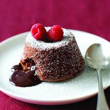

1.COCONUT COOKIES
Ingredients
• 100g butter, plus extra to grease
• 100g dark chocolate, chopped
• 150g light brown soft sugar
• 3 large eggs
• ½ tsp vanilla extract
• 50g plain flour
• single cream, to serve
Method
• STEP 1
Heat oven to 200C/180C fan/gas 6. Butter 6 dariole moulds or basins well and place on a baking tray.
• STEP 2
Put 100g butter and 100g chopped dark chocolate in a heatproof bowl and set over a pan of hot water (or alternatively put in the microwave and melt in 30 second bursts on a low setting) and stir until smooth. Set aside to cool slightly for 15 mins.
• STEP 3
Using an electric hand whisk, mix in 150g light brown soft sugar, then 3 large eggs, one at a time, followed by ½ tsp vanilla extract and finally 50g plain flour. Divide the mixture among the darioles or basins.
• STEP 4
You can now either put the mixture in the fridge, or freezer until you're ready to bake them. Can be cooked straight from frozen for 16 mins, or bake now for 10-12 mins until the tops are firm to the touch but the middles still feel squidgy.
• STEP 5
Carefully run a knife around the edge of each pudding, then turn out onto serving plates and serve with single cream.
2.VEG NOODLES
INGREDIENTS
FOR BOILING NOODLES:
• 6 cup water6 cup water
• 1 tsp salt1 tsp salt
• 1 tsp oil1 tsp oil
• 125 grams noodles125 grams noodles
OTHER INGREDIENTS:
• 2 tbsp oil2 tbsp oil
• 2 clove garlic, finely chopped2 clove garlic, finely chopped
• 1 inch ginger, finely chopped1 inch ginger, finely chopped
• 1 chilli, slit1 chilli, slit
• ½ onion, sliced½ onion, sliced
• 2 tbsp spring onion, chopped2 tbsp spring onion, chopped
• ½ carrot, chopped½ carrot, chopped
• ¼ green capsicum, chopped¼ green capsicum, chopped
• 5 snow pea, chopped5 snow pea, chopped
• 5 beans, chopped5 beans, chopped
• ¼ red capsicum, chopped¼ red capsicum, chopped
• 5 florets broccoli5 florets broccoli
• 3 tbsp cabbage, shredded3 tbsp cabbage, shredded
• 2 tbsp tomato sauce2 tbsp tomato sauce
• 1 tbsp soy sauce1 tbsp soy sauce
• 1 tbsp vinegar1 tbsp vinegar
• 1 tbsp chilli sauce1 tbsp chilli sauce
• ¼ tsp pepper powder¼ tsp pepper powder
• ½ tsp salt½ tsp salt
Method
1. firstly, in a large vessel take 6 cup water, 1 tsp salt and 1 tsp oil.
2. once the water comes to a boil place a pack of hakka noodles (125 gm)
3. boil the noodles for 3 minutes or till it turns al dente. refer package instructions to know the exact cooking time.
4. drain off the water from noodles and pour 1 cup of cold water to prevent from further cooking.
5. drizzle 1 tsp oil and mix gently, to avoid noodles from sticking to each other. keep aside.
6. now in a large kadai heat 2 tbsp oil and saute 2 clove garlic, 1 inch ginger and 1 chilli.
7. saute ½ onion, 2 tbsp spring onion on high flame.
8. further add ½ carrot, ¼ green capsicum, 5 snow pea, 5 beans, chopped, ¼ red capsicum and 5 florets broccoli.
9. stir fry on high flame for 2 minutes or until veggies are cooked yet retain their crunch.
10. also add 3 tbsp cabbage and stir fry.
11. further add 2 tbsp tomato sauce, 1 tbsp soy sauce, 1 tbsp vinegar, 1 tbsp chilli sauce, ¼ tsp pepper powder and ½ tsp salt.
12. stir fry until sauces are well combined.
13. add in boiled noodles and mix gently.
14. toss and mix until noodles are cooked completely.
15. finally, garnish with spring onion and enjoy veg noodles.
3.GOBI MANCHIRIAN
METHOD
1- To make the sauce, heat the oil in a skillet on high heat. Once hot, add the grated garlic, ginger, green chili and chopped celery.
Saute for 1 minute until ginger-garlic start changing color.
2- Then add the chopped onion, green pepper and scallions.
Then add the soy sauce, ketchup, vinegar, hot sauce (like sriracha), sugar and white pepper powder. Taste test and add salt if needed. Set aside.
5- Meanwhile cut and clean cauliflower florets and drop them in hot salted water. Simmer on medium heat for around 4 minutes.
6- Drain water and place florets on a paper tissue. Pat dry each individually.
7- To a large bowl, add the flour, cornstarch, ginger-garlic paste, salt and pepper. Whisk and start adding water, little by little.
Form a smooth, free-flowing batter. It should not be too thick or thin.
8- Heat oil for frying on medium heat in a kadai or pan. Once oil is hot, dip the florets into the batter. Make sure they are well coated with the batter.
9- Drain off the excess batter and carefully drop florets into the hot oil.
10- Fry on medium heat for 6 to 7 minutes, until crispy and browned.
11- Transfer the fried cauliflower florets into the sauce (sauce should be warm when you do this).
12- Toss to combine until all the florets are well coated with the sauce.
4.MOLTEN CHOCOLATE CAKE

Ingredients
• 100g butter, plus extra to grease
• 100g dark chocolate, chopped
• 150g light brown soft sugar
• 3 large eggs
• ½ tsp vanilla extract
• 50g plain flour
• single cream, to serve
Method
• STEP 1
Heat oven to 200C/180C fan/gas 6. Butter 6 dariole moulds or basins well and place on a baking tray.
• STEP 2
Put 100g butter and 100g chopped dark chocolate in a heatproof bowl and set over a pan of hot water (or alternatively put in the microwave and melt in 30 second bursts on a low setting) and stir until smooth. Set aside to cool slightly for 15 mins.Using an electric hand whisk, mix in 150g light brown soft sugar, then 3 large eggs, one at a time, followed by ½ tsp vanilla extract and finally 50g plain flour. Divide the mixture among the darioles or basins.
• STEP 4
You can now either put the mixture in the fridge, or freezer until you're ready to bake them. Can be cooked straight from frozen for 16 mins, or bake now for 10-12 mins until the tops are firm to the touch but the middles still feel squidgy.
• STEP 5
Carefully run a knife around the edge of each pudding, then turn out onto serving plates and serve with single cream.